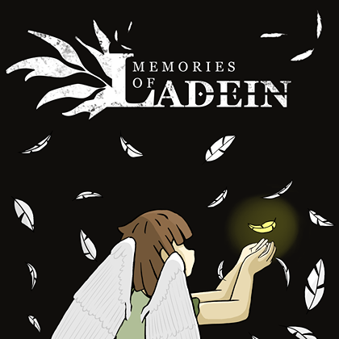

Level 01Completed
Producer / Technical Designer / Programmer / Composer
Memories of Ladein
Schrödinger Studio | January 2026 - June 2026
- C++
- Unreal Engine 5.6.1
- GitHub Desktop
Part of the team, specifically as a technical designer, programmer, producer and composer, for this narrative-driven project at Schrödinger Studio. I was dedicated to designing levels with a platformer based game, taking into account vertical and horizontal abilities that carry momentum and quick decision making from the player. As a producer I was in charge of managing team tasks (using resources such as Trello and Microsoft Excel), managing team deadlines and communication. As a programmer I was tasked to work on character ability integration and coherence as well as optimization through various means, level streaming being an example of such.
Play on itch.io